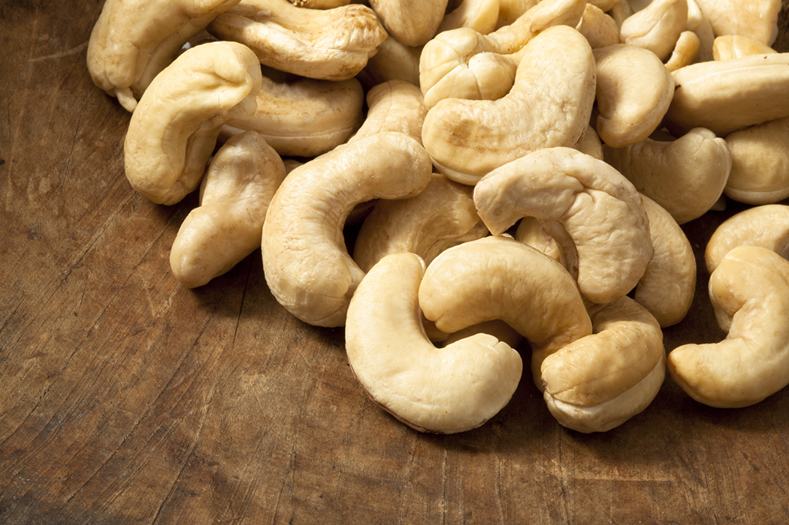
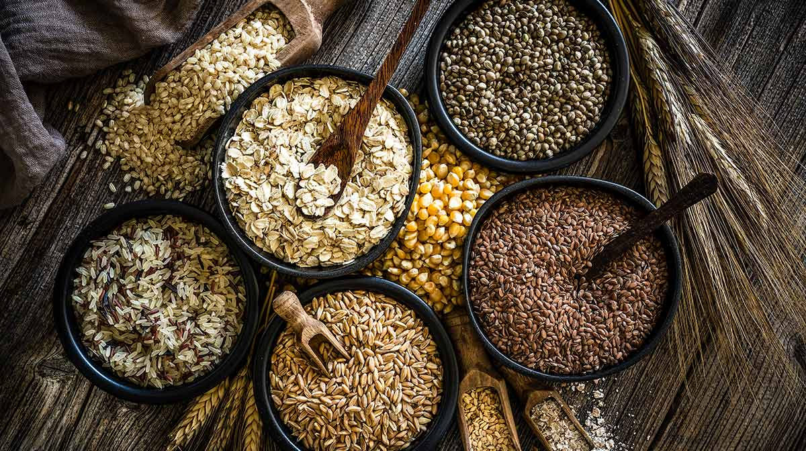

Los Macronutrientes son aquellas sustancias que proporcionan energía al organismo para un buen funcionamiento, y otros elementos necesarios para reparar y construir estructuras orgánicas, para promover el crecimiento y para regular procesos metabólicos.
Proteínas
Las proteínas se construyen a partir de aminoácidos1 y son los componentes principales de todas las células del cuerpo. Los seres humanos podemos producir internamente algunas proteínas, sin embargo, otras debemos obtenerlas forzosamente a través del consumo de alimentos con proteína.
Las proteínas intervienen en la formación de ciertas reacciones químicas que se producen en nuestro organismo, así como ciertas enzimas, vitaminas, hormonas… También son muy importantes en funciones defensivas, ya que son las responsables de formar anticuerpos, los encargados de luchar contra infecciones y agentes extraños que pueden resultar amenazantes para la salud. También sirven para transportar sustancias en el cuerpo tales como el hierro o el oxígeno.
Alimentos que contienen proteínas: De origen animal: • Pollo
• Carne de res
• Carne de cerdo
• Pescado
• Huevo De origen vegetal: • Garbanzo
• Lentejas
• Soya
• Maní
• Frutos secos

Carbohidratos
Los carbohidratos o glúcidos son los compuestos orgánicos más abundantes en la naturaleza y los más consumidos en la dieta del ser humano. El origen de todos los carbohidratos es la glucosa que proviene de la fotosíntesis, durante la cual la clorofila absorbe la energía del Sol y la transforma en energía química que se almacena como almidón.
Entre las fuentes de obtención de carbohidratos se encuentran:
las frutas, miel, leche, caña de azúcar, betabel, granos de cereales, raíces comestibles, entre otros. Existe un gran número de carbohidratos; los más conocidos son la glucosa, fructosa, sacarosa, lactosa, almidón y celulosa. Su estructura química determina su funcionalidad y sus características, mismas que influyen en el sabor, viscosidad, estructura y color que presentan los distintos alimentos que los contienen.
Minerales
Los minerales son los elementos naturales no orgánicos que representan entre el 4 y el 5 por ciento del peso corporal del organismo y que están clasificados en macrominerales y oligoelementos. El ser humano los necesita para mantener el buen funcionamiento del cuerpo y garantizar, entre otros, la formación de los huesos, la regulación del ritmo cardiaco y la producción de las hormonas.
• Macrominerales:
En la dieta normal, los macrominerales son aquellos que el organismo necesita en cantidades más grandes. En este grupo se incluyen el calcio, fósforo, magnesio, potasio, azufre, cloro y sodio.
• Oligoelementos:
Respecto a los oligoelementos, estos son los minerales que el organismo sólo requiere en pequeñas cantidades. Los principales oligoelementos son: hierro, manganeso, cobre, selenio, yodo, cobalto, cinc y flúor. Tanto la falta de estos minerales, como su exceso pueden tener consecuencias muy graves para la salud

Vitaminas
Las vitaminas son sustancias orgánicas presentes en cantidades muy pequeñas en los alimentos, pero necesarias para el metabolismo. Se agrupan en forma conjunta no debido a que se relacionen químicamente o porque tengan funciones fisiológicas semejantes, sino debido, como lo implica su nombre, a que son factores vitales en la dieta y porque todas se descubrieron en relación con las enfermedades que causan su carencia.
Son nutrientes que dan energía, tienen 9 calorías en cada gramo. Ayudan en la absorción de las vitaminas A, D, E y K que se disuelven en grasa. Las grasas pueden ser saturadas o insaturadas, y la mayoría de los alimentos con grasa tienen ambos tipos, pero generalmente hay más de un tipo de grasa que del otro.
Grasas saturadas:
Las grasas saturadas son sólidas a temperatura ambiente, y también se les conoce como "grasas sólidas". Se hallan en alimentos de origen animal, como la leche, el queso y la carne. Las aves y el pescado tienen menos grasas saturadas que las carnes rojas. También se encuentran en aceites tropicales, como el aceite de coco, el aceite de palma y la mantequilla de cacao. Los alimentos hechos con mantequilla, margarina o manteca (pasteles, galletas dulces y otros postres) tienen una gran cantidad de grasas saturadas. Las grasas saturadas pueden elevar el colesterol.
Grasas trans:
Son grasas que han sido modificadas mediante un proceso llamado hidrogenación. Este proceso aumenta la duración de las grasas y las hace más duras a temperatura ambiente. Una grasa más dura hace galletas más crocantes y masas para tartas más hojaldradas. Las grasas trans pueden elevar su colesterol, de modo que coma la menor cantidad de grasas trans que sea posible.
• Alimentos procesados.
• Alimentos de refrigerio, como papas fritas (de bolsa) y galletas.
• Galletas dulces.
• Algunas margarinas y aderezos para ensaladas.
• Alimentos hechos con manteca y aceites parcialmente hidrogenados.
Grasas insaturadas:
Las grasas insaturadas son líquidas a temperatura ambiente, se hallan más que nada en aceites de origen vegetal. Si come grasas insaturadas en vez de grasas saturadas, esto puede ayudar a mejorar sus niveles de colesterol. Trate de comer principalmente grasas insaturadas. Las grasas monoinsaturadas y las grasas poliinsaturadas son tipos de grasas insaturadas.
Grasas monoinsaturadas:
Estas grasas se hallan en los aguacates (paltas), los frutos secos y los aceites vegetales, como los aceites de canola, oliva y cacahuate (maní). Comer alimentos que son altos en grasas monoinsaturadas puede ayudar a bajar su colesterol LDL "malo". Las grasas monoinsaturadas también pueden mantener altos los niveles del colesterol HDL "bueno". Pero comer más grasas insaturadas sin reducir las grasas saturadas tal vez no le baje el colesterol.
Grasas poliinsaturadas:
Este tipo de grasas se encuentra principalmente en los aceites vegetales como los aceites de cártamo, girasol, sésamo, soya y maíz, también es la grasa principal que se encuentra en pescados y mariscos. Comer grasas poliinsaturadas en lugar de grasas saturadas puede reducir el colesterol LDL. Los dos tipos de grasas poliinsaturadas son los ácidos grasos omega-3 y omega-6.
Grasas totales
Las grasas totales incluyen las grasas saturadas, poliinsaturadas, monoinsaturadas y las grasas trans.
Revise las etiquetas de información nutricional en los envases de los alimentos para saber la grasa total, las grasas saturadas y las grasas trans. No es obligatorio que las etiquetas de los alimentos incluyan las grasas monoinsaturadas y poliinsaturadas.
Azúcares
El cuerpo descompone los carbohidratos, que incluyen azúcares y almidones, en glucosa. Los azúcares son una importante fuente de energía, y la glucosa es la más importante para nuestro cuerpo. El cerebro humano necesita unos 130 gramos de azúcar (glucosa) al día para seguir funcionando. La glucosa puede encontrarse en varios alimentos, como la miel, frutas y verduras.
Los otros azúcares más comunes que se encuentran en los alimentos y las bebidas son:
• Sacarosa:
Se encuentra de forma natural en frutas y verduras, y se extrae de la caña de azúcar y de la remolacha azucarera para producir azúcar de mesa (el azúcar que normalmente compras en el supermercado o en la tienda de comestibles)
• Fructosa y glucosa:
Se encuentran en la miel, frutas y verduras
• Lactosa:
Se encuentra en la leche y los productos lácteos, como el queso y los yogures
• Maltosa:
Elaborada con cereales, se encuentra en bebidas malteadas y la cerveza.